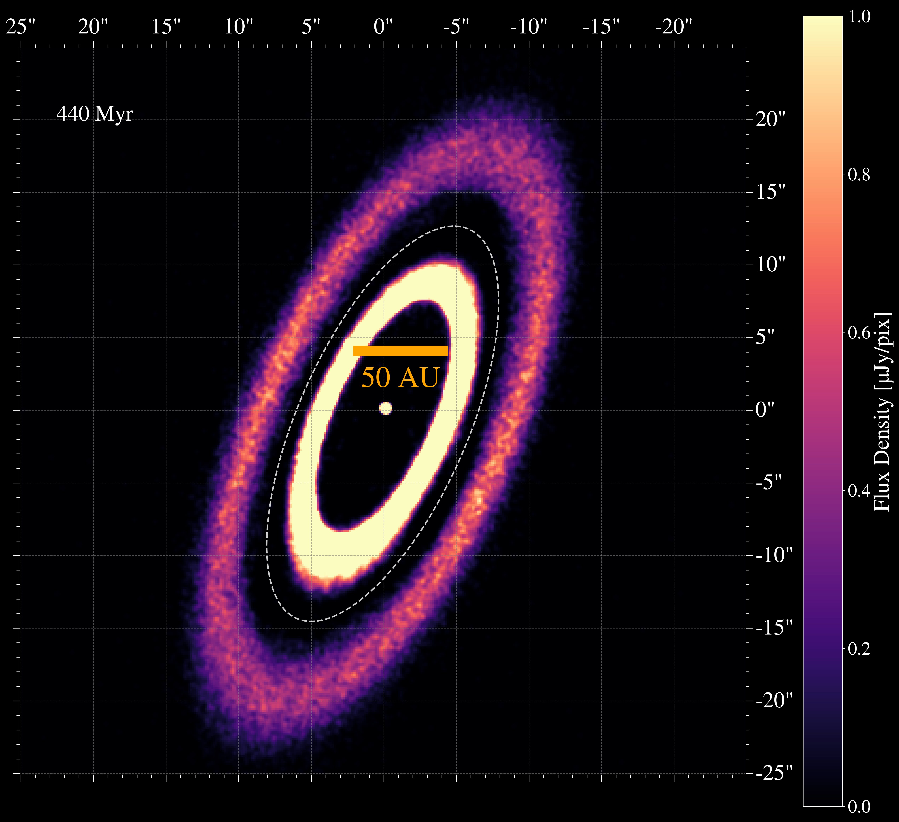

Research
Research
I am interested in all things related to planet formation. I currently study the dynamics and evolution of debris disks, a class of objects akin to the Kuiper Belt in our own solar system, that are the leftovers of planet formation. I'm also investigating robust methods of detecting exocomets.
Current Research Projects

REBOUND N-body Simulations of Fomalhaut's Dual Belts
I am running suits of N-body simulations with REBOUND to understand the origin, evolution, and stability of the Fomalhaut debris disk's dual belt structure. Specifically, I am working to constrain the parameter space of the unseen planets scultping the belts. The architecutre of the belts indicates there are likely multiple eccentric planets working to shape the system. My simulations investigate the range of planet configurations that can carve the belts, shape them into the geometry we observe today, and remain stable over the total 440 Myr lifetime of the system. Paper out soon!
Detecting Transitting Exocomets
More soon!
Undergraduate Research
As an undergraduate I partipated in the SAO REU to detect microlensing exoplanets. I used ~ 40 hours of time on the Los Cumbres Observatory Global Telescope Network (LCOGT) to take follow-up observations of high-magnification microlensing events. This project yielded 2 new planet detections, one of which has been published here!